Spotify Concept: Crafting Personalized Interfaces
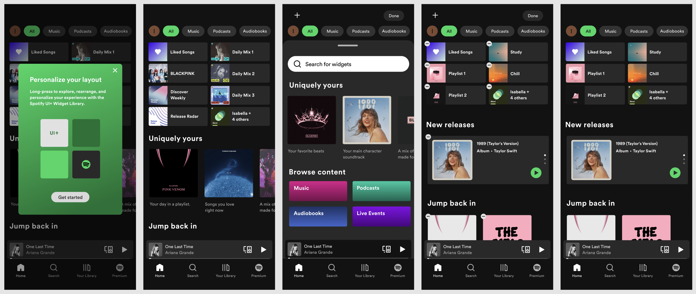
The Challenge
Like many Spotify listeners, I enjoy a wide spectrum of music — from R&B and pop to lo-fi study beats. However, many users find the interface restricting and overwhelming.
My original hypothesis:
If Spotify's interface had more customization, users would be more inclined to engage in deeper, more frequent interactions.
Understanding User Pain Points
I conducted user interviews to understand how listeners actually feel about Spotify's current interface. Three clear themes emerged:
Personalization Value
"I like how Spotify recommends new songs based on my listening history."
Navigation Difficulties
"It's hard to find the music I added, not just what's recommended."
Feature Clutter
"I feel like they keep adding new things, but it just clutters the app for me."
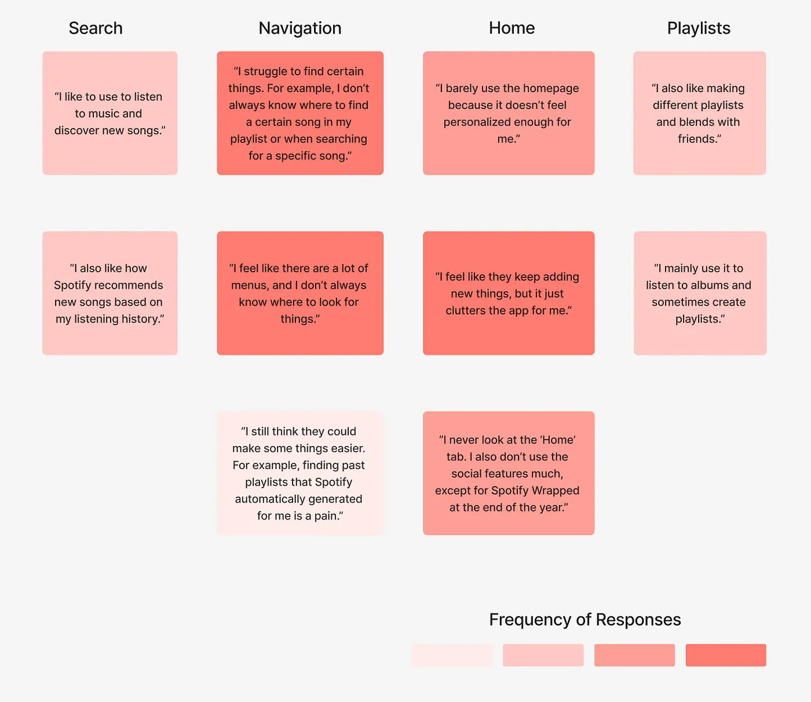
Key Insight
Users want to personalize their Spotify to fit what they want to see. Finding content quickly is difficult because of cluttered interfaces and lack of organization control.
Exploring Opportunities
After brainstorming with a fellow designer, we identified two key opportunities:
Spotify Organization
How might we give users more control over how playlists, recommendations, and sections are organized?
Spotify Personalization ✦
How might we allow users to personalize their interface to fit their preferences? (the direction I pursued)
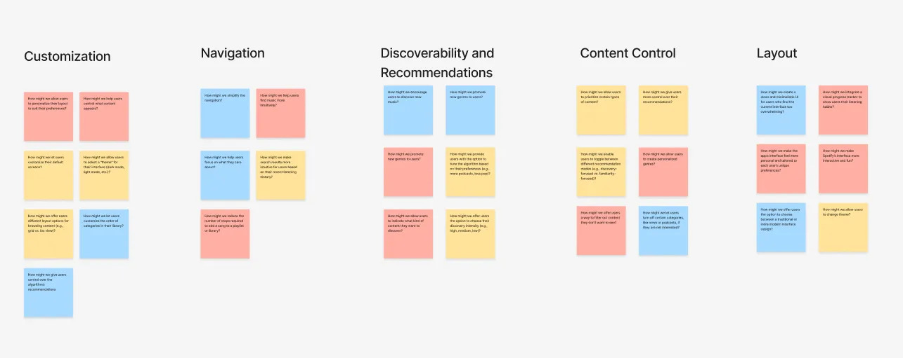
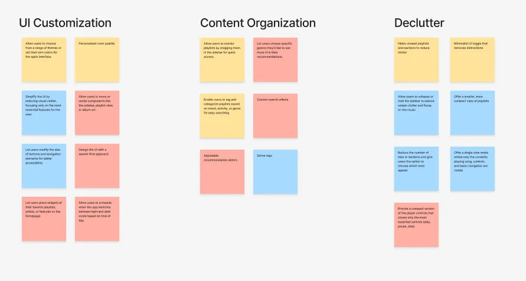
Design Exploration
Low-Fidelity Sketches
I explored how different layout structures could impact user experience, sketching various approaches to widget-based customization.
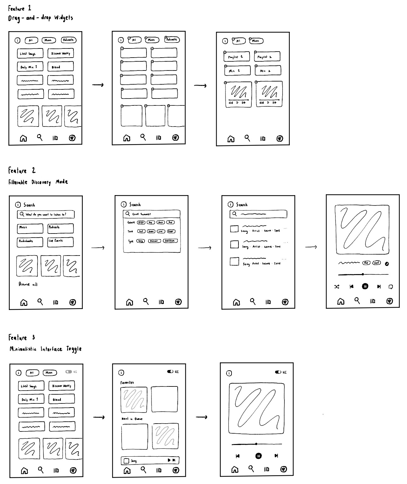
Content Requirements
After brainstorming numerous content requirements, I determined important elements such as widget name, widget type, preview thumbnail, and placement grids.
Information Hierarchy
I placed the Spotify UI Customization Overlay as an optional layer accessible from core pages like Home, Search, and Library. The overlay is intentionally hidden under these core sections to reflect its secondary role.
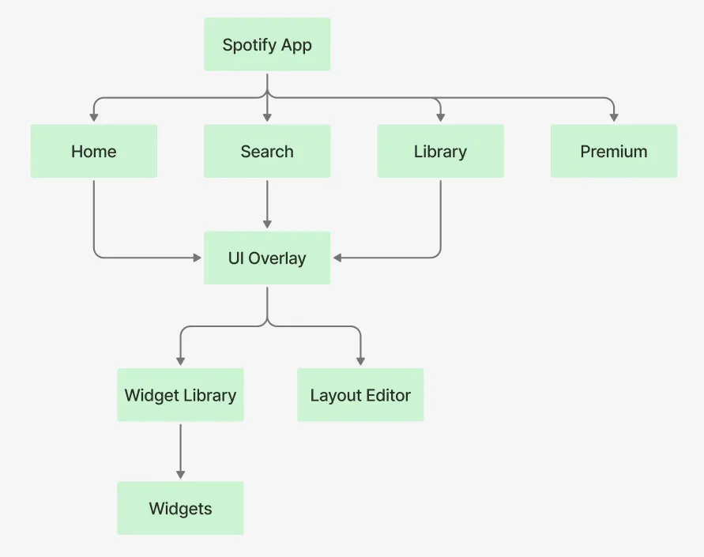
Mid-Fidelity Flows
I explored three flows for introducing the personalization feature:

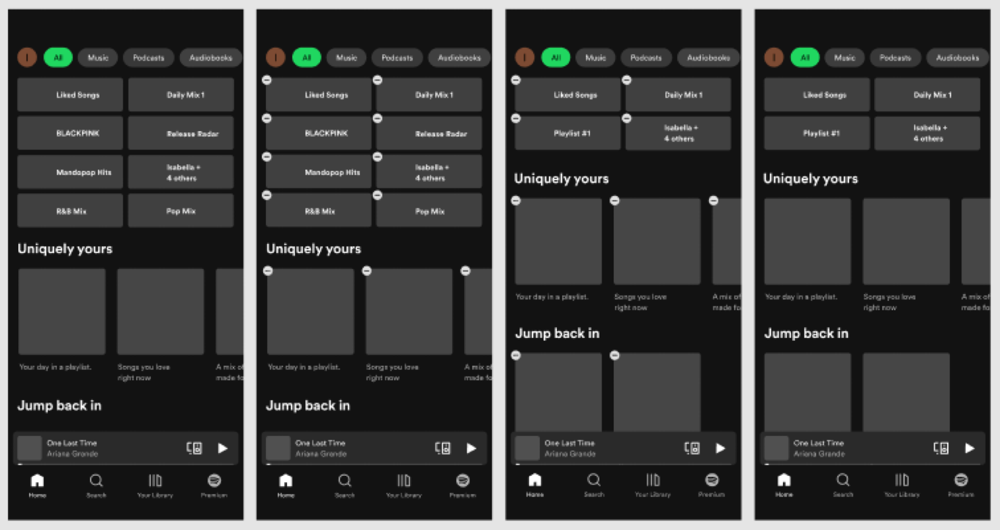
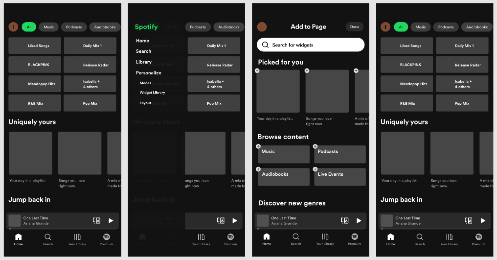
I pursued Flow 2 during the medium-fidelity prototype, where the pop-up modal introduces the new interface customization feature. From there, users can access the widget library, providing greater control over how their Spotify interface is personalized.
Understanding Spotify's Visual Design
To make the interface feel more intentional and polished, I created a UI kit to help define the visual system behind the personalization feature. This helped me keep spacing, hierarchy, and component styling more consistent across the experience.
The kit also gave me a clearer foundation for how buttons, cards, and controls should behave so the final product felt cohesive rather than overly app-like or cluttered.
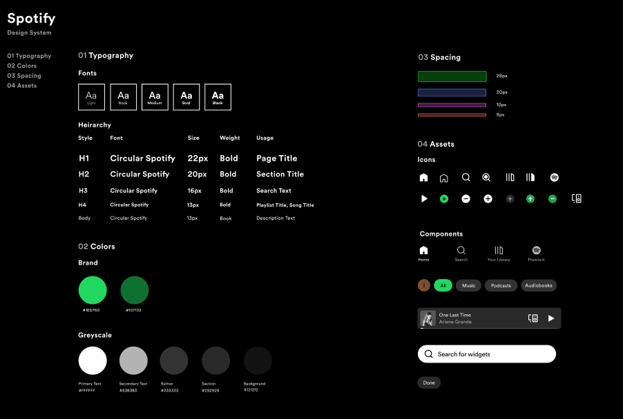
Exploring Similar Visual Design
I drew design inspiration from Mobbin and explored modern UI patterns to identify effective layout strategies that balanced personalization with visual simplicity.
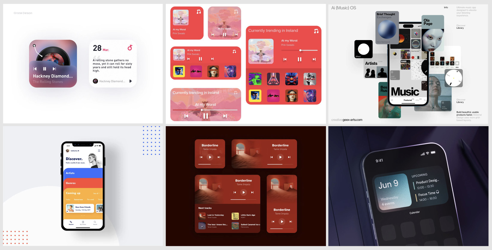
These references helped me refine the final interaction by keeping the visual language clean, structured, and easy to scan while still allowing the feature to feel expressive.
Final Interaction for Widget Personalization
To refine the final experience, I focused on the widget navigation flow and how users would move through the interface with clarity. The goal was to keep the system flexible while still feeling simple and visually balanced.
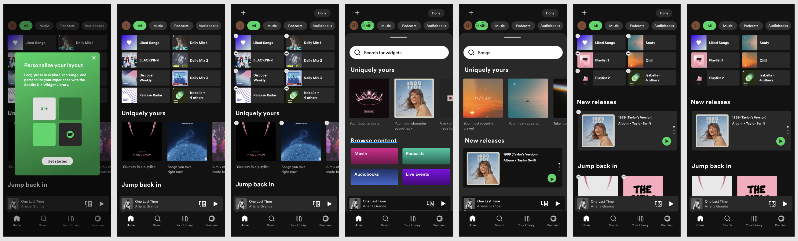
This step helped connect the UI kit and flow explorations into a final interaction that felt more cohesive and easier to understand at a glance.
Final Interaction Design
The final interaction includes a simple introduction to the layout personalization feature. Users can easily explore, add, and arrange interface widgets using a drag-and-drop editor — turning Spotify into a space that reflects how each listener actually uses it.
What I Learned
Intentional Design Over Feature Bloat
Effective design is not just about adding more features but creating intentional experiences that align with user needs. Users didn't want more content — they wanted more control.
Research-Grounded Solutions
Starting with a clear understanding of user pain points before jumping into solutions. User interviews and market research helped me identify patterns in frustration.
Design as Conversation
Design is an ongoing conversation between balancing user behavior, system constraints, and visual clarity.
Looking Forward
Moving forward, I'd like to explore cross-disciplinary collaboration, involving developers earlier in the design process to ensure feasibility and scalability. I'm excited to continue exploring how thoughtful interface design can empower users.